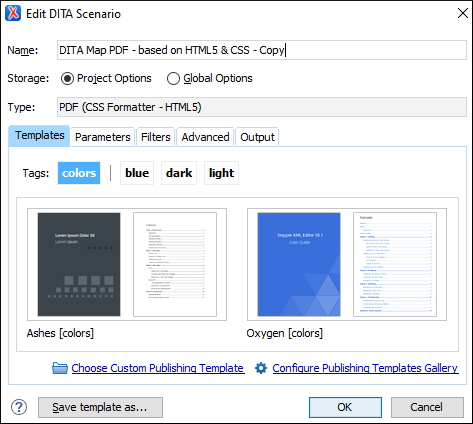

DITA Map PDF - based on HTML5 & CSS Transformation
Oxygen XML Editor includes a built-in DITA Map PDF - based on HTML5 & CSS transformation scenario based on a DITA-OT CSS-based PDF Publishing plugin that converts DITA maps to PDF using a CSS-based processing engine and an HTML5 intermediate format. Oxygen XML Editor comes bundled with a built-in CSS-based PDF processing engine called Oxygen PDF Chemistry. Oxygen XML Editor also supports some third-party processors.
For those who are familiar with CSS, this makes it very easy to style and customize the PDF output of your DITA projects without having to work with xsl:fo customizations. This transformation also includes some built-in publishing templates that you can use for the layout of your PDF output and you can create your own templates or edit existing ones.
- Oxygen PDF Chemistry - A built-in processor that is bundled with Oxygen XML Editor. For more information, see the Oxygen PDF Chemistry User Guide. This is the supported processor.
- Prince Print with CSS (not included in the Oxygen XML Editor installation kit) - A third-party component that needs to be purchased from http://www.princexml.com.
- Antenna House Formatter (not included in the Oxygen XML Editor installation kit) - A third-party component that needs to be purchased from http://www.antennahouse.com/antenna1/formatter/.
How to Create the Transformation Scenario
- Click the
 Configure Transformation Scenario(s) button from the DITA Maps
Manager toolbar.
Configure Transformation Scenario(s) button from the DITA Maps
Manager toolbar. - Select the DITA Map PDF - based on HTML5 & CSS transformation scenario.
-
If you want to configure the transformation, click the Edit button.
Step Result: This opens an Edit scenario configuration dialog box that allows you to configure various options in the following tabs:- Templates Tab - This tab contains a set of
built-in publishing templates that you can use for the layout of your WebHelp
system output. You can also create your own publishing templates by saving one
from the gallery and changing it.
Figure 1. DITA Map to PDF Templates  - Parameters Tab - This tab includes numerous parameters that can be set to customize the transformation.
- Filters Tab - This tab allows you to filter certain content elements from the generated output.
- Advanced Tab - This tab allows you to specify some advanced options for the transformation scenario.
- Output Tab - This tab allows you to configure options that are related to the location where the output is generated.
- Templates Tab - This tab contains a set of
built-in publishing templates that you can use for the layout of your WebHelp
system output. You can also create your own publishing templates by saving one
from the gallery and changing it.
- In the Parameters tab, configure any of the following
parameters (if applicable):
- args.css - Specifies a path to a custom CSS to be used in addition to those
specified in the publishing template. The files must have URL
syntax and be separated using semicolons. Also, the
dita.css.listparameter must be left empty to use these files in addition to the selection in the Styles drop-down menu. - css.processor.type- This is where you choose the processor type. You can select between Oxygen PDF Chemistry, Prince XML, or Antenna House.
- css.processor.path.chemistry (if you are using the Oxygen PDF Chemistry processor) - Specifies the path to the Oxygen PDF Chemistry executable file that will be run to generate the PDF. If this parameter is not set, the transformation will use the processor specified in the CSS-based Processors preferences page.
- css.processor.path.prince (if you are using the Prince Print with CSS processor) - Specifies the path to the Prince executable file that will be run to produce the PDF. If you installed Prince using its default settings, you can leave this blank.
- css.processor.path.antenna-house (if you are using the Antenna House Formatter processor) - Specifies the path to the Antenna House executable file that will be run to produce the PDF. If you installed Antenna House using its default settings, you can leave this blank.
- show.changes.and.comments - When set to
yes, user comments, replies to comments, and tracked changes are published in the PDF output. The default value isno. - figure.title.placement - Controls the position of the figure title relative to the image. Allowed values are "top" and "bottom", "top" is the default
- args.css - Specifies a path to a custom CSS to be used in addition to those
specified in the publishing template. The files must have URL
syntax and be separated using semicolons. Also, the
- Click OK and run the transformation scenario.
Customizing the Output
For information about customizing the output, see CSS-based DITA to PDF Customization.